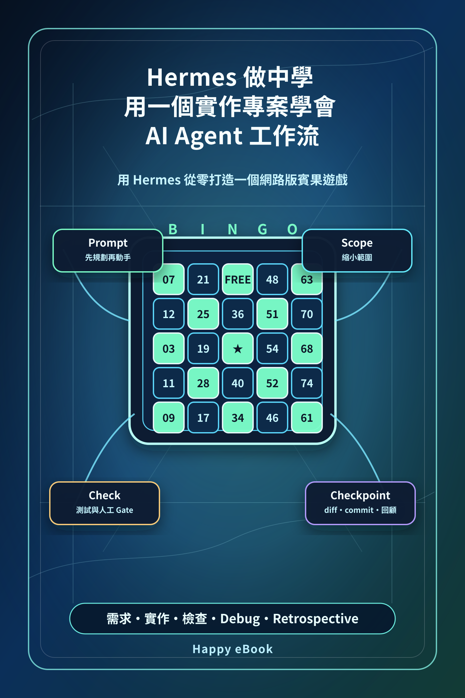

Google Play Books
Hermes 做中學：用一個實作專案學會 AI Agent 工作流
用 Hermes 從零打造一個網路版賓果遊戲

付費購買提供試閱版
Hermes 做中學：用一個實作專案學會 AI Agent 工作流
用 Hermes 從零打造一個網路版賓果遊戲
《Hermes 做中學》不是一本只介紹 Hermes 功能的書，而是一本跟著真實小專案做中學的 AI Agent 工作流範例書。本書以「網路版賓果遊戲」為主題，示範如何用 Hermes 從一個模糊想法開始，逐步完成需求釐清、範圍縮小、任務拆解、檔案建立、程式修改、檢查、修 bug、Git checkpoint 與專案結案整理。讀者會看到如何請 Hermes 先規劃而不是直接亂改檔案；如何把賓果遊戲拆成卡片產生、抽號、自動標記、Bingo 判斷、房間與玩家模型；如何從純前端單機版逐步演進到 Node.js + Express 的簡化網路版。本書也補上第一次安裝 Hermes 的新手引導，帶讀者理解安裝、設定模型、hermes doctor、安全練習資料夾、第一個安全 prompt，以及 API key、diff、commit 等基本注意事項。適合想學 Hermes、想理解 AI Agent 實際協作方式，也想看一個小型 web app 如何被逐步完成的讀者。